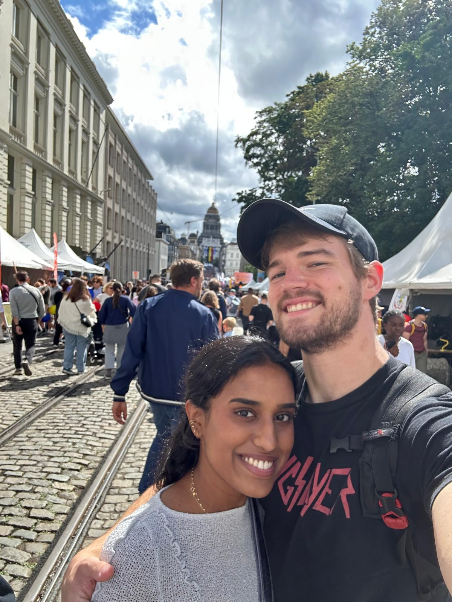
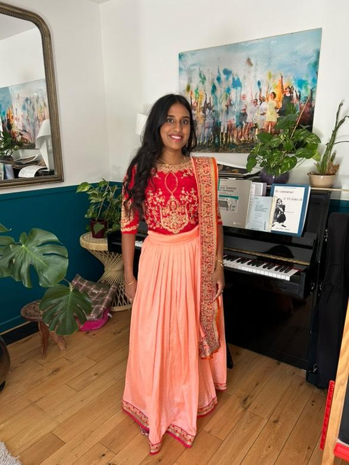
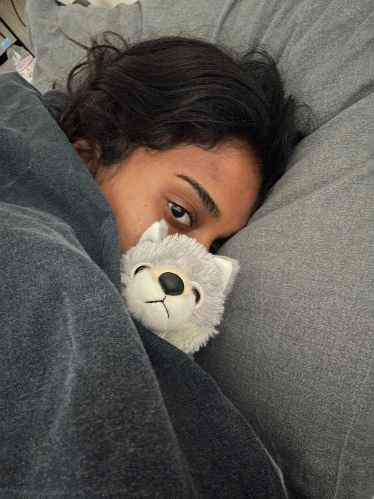

J'aime quand on est ensemble
J'ai jamais envie de partir.
J'aime quand tu es heureuse
Ton bonheur est mon bonheur.

J'aime ton style
Tenue indienne, tenue de travail, et même en pyjama.
J'aime quand es malade
Même si je vais tout faire pour que ça arrive le moins possible.

J'aime quand tu boudes
Mais ça me fait un petit pincement au coeur à chaque fois aussi. 😖
J'aime tes cuisses...
No comment. 😇
Je t'aime quand tu resplendis
Tu m'aveugles.
J'aime quand tu te blottis contre moi
Tu fit si parfaitement dans mes bras.
Je t'aime Flo
Ton premier cadeau: on se verra dimanche 😇